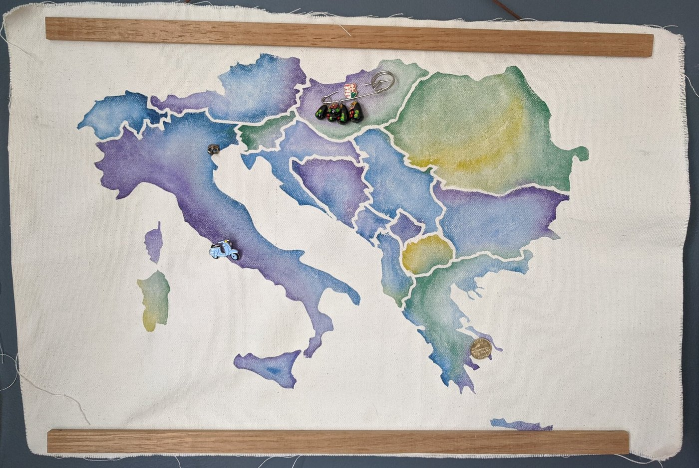
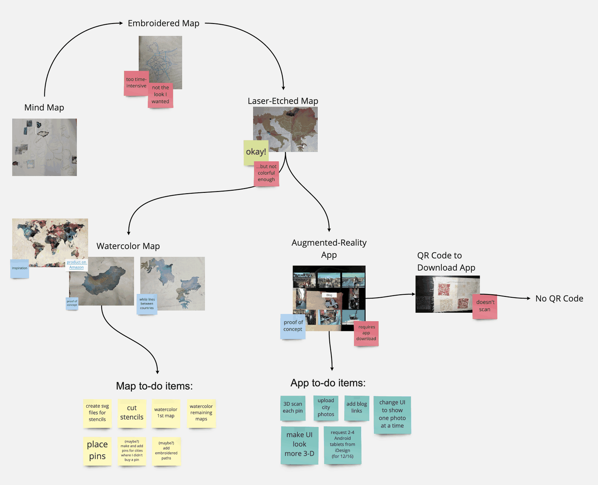
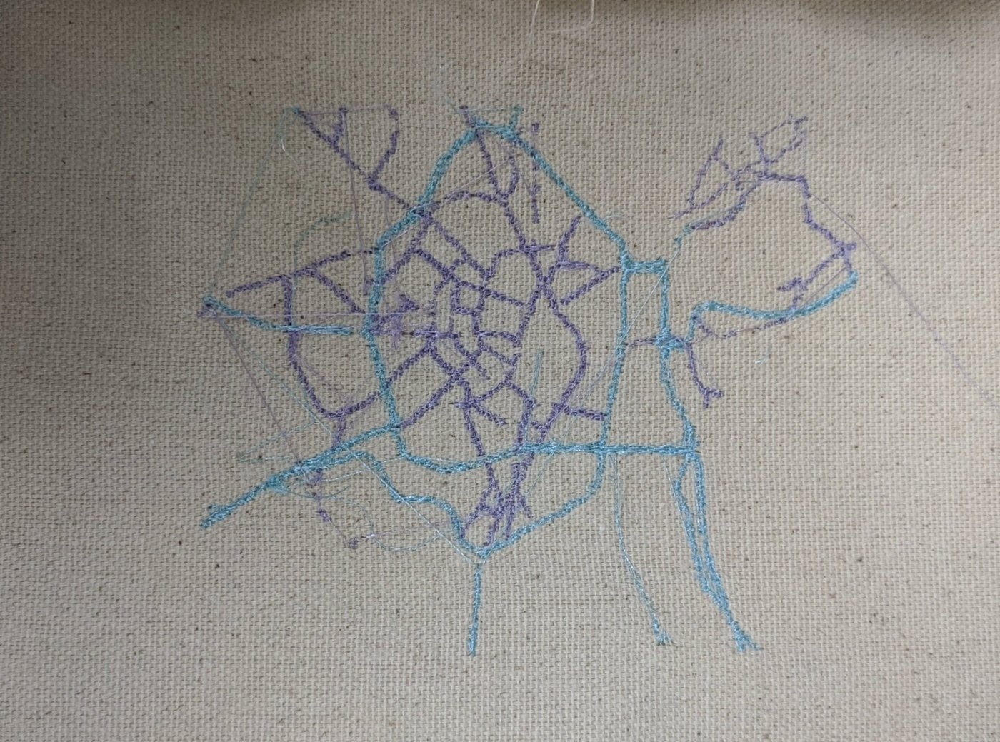
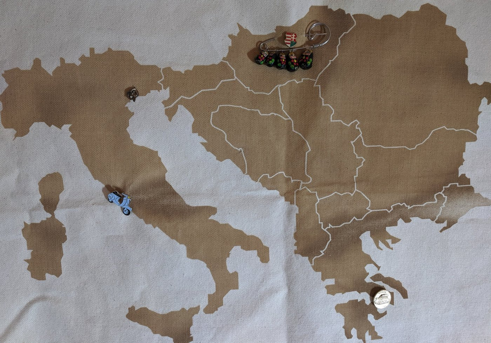
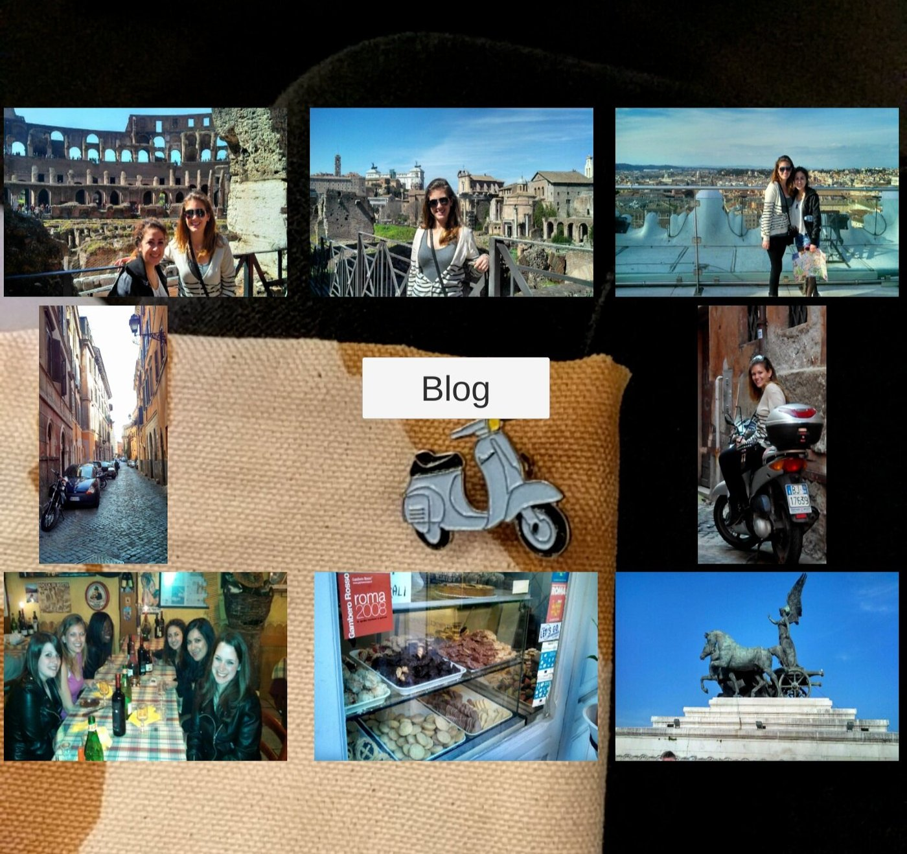
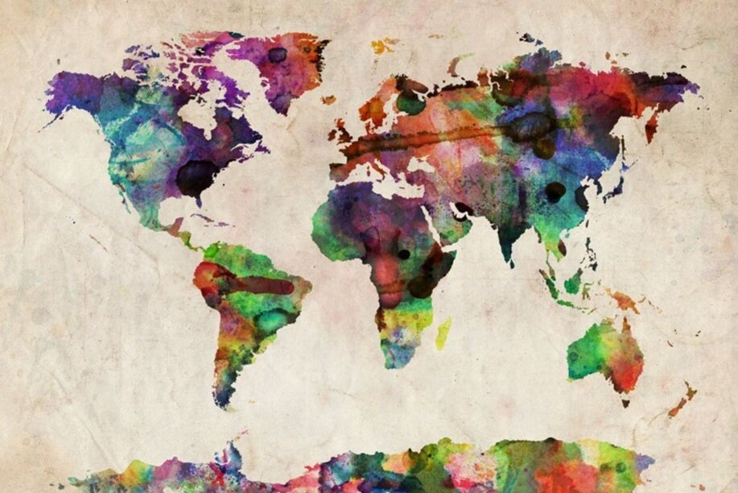
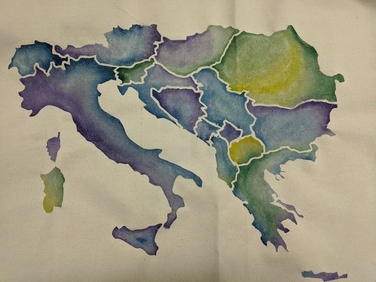
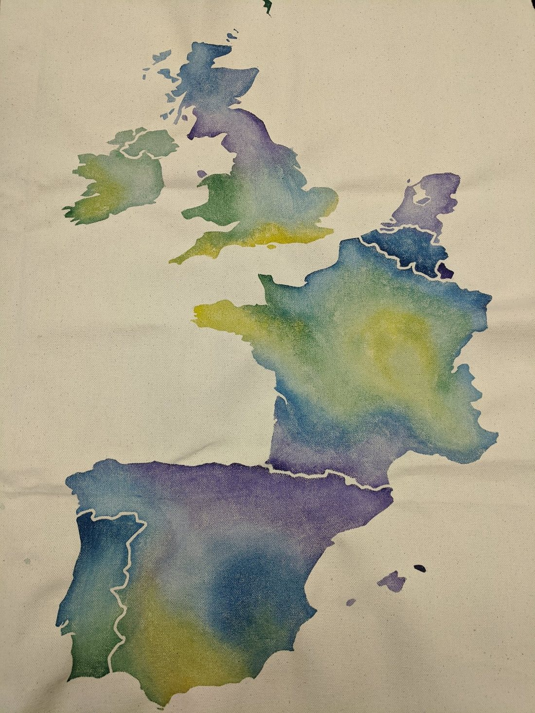
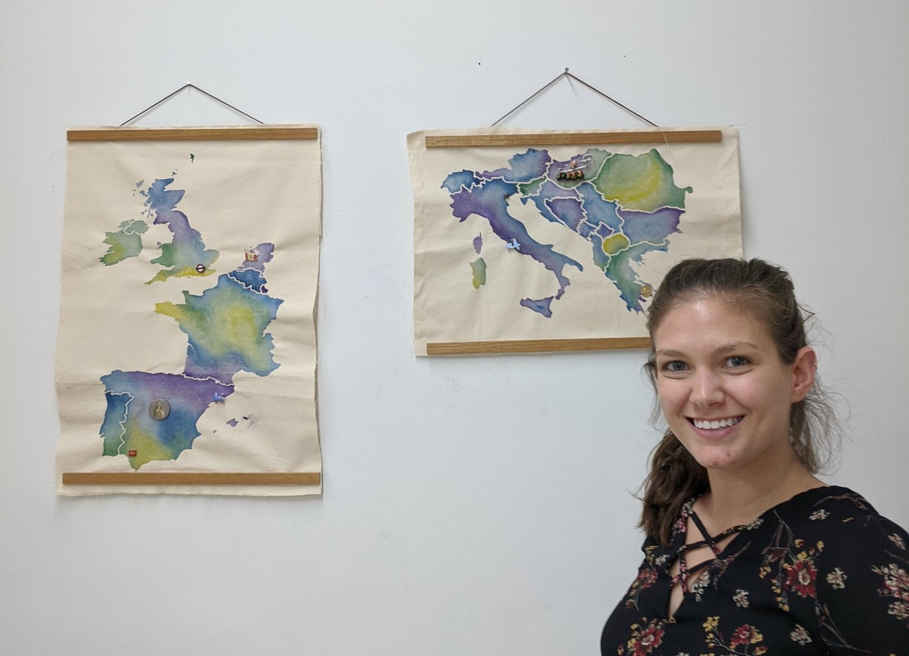
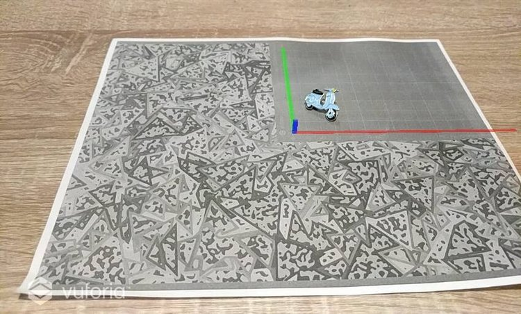

On My Finalized AR Travel Maps
View this post in its entirety on Medium.
Last Monday, I presented my finalized Augmented Reality Travel Maps.
Creative Technologies · Physical + Digital
An augmented-reality map of my travels throughout the world.

Idea
As my "Passion Project" for Erin Riley's course Studio in Creative Technologies, I am creating an augmented-reality map of my travels across the world. I've collected pins from many of the cities I've visited, so I will use these pins to mark the cities on the map. I developed an augmented-reality app in which one may scan each pin to view photos from my trip to the city where it was purchased.
Process
I began with a mind map that developed over a couple of months as I experimented with different technologies such as laser cutting and etching, vinyl cutting, and digital embroidery. Slowly, my concept for AR-enabled maps featuring my collection of pins began to surface.




My initial idea was to digitally embroider each map, but these maps required a level of detail not feasible for the scale of my project. Next, my instructor suggested I laser etch the maps on canvas. While laser etching was efficient for the scale of my maps, I felt it lacked dimension. I turned to this map on Amazon (below, left) for inspiration and chose to vinyl-cut stencils and water color my maps.



Completed Project
The completed project consists of two maps and an AR application. The application is open-source and available at github.com/lrbloch/ar_travel_map. The maps are currently hanging on the wall in my living room where guests can interact with them when they visit.

Future Work
Future work on this project includes the following five to-do items:
Questions, Suggestions, Requests
Please contact me at laura.r.bloch@gmail.com or @laura_bloch
Musings
View this post in its entirety on Medium.
Last Monday, I presented my finalized Augmented Reality Travel Maps.

With my two most important maps complete, the past couple of weeks have been focused on developing my AR app.